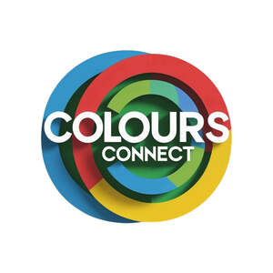

Trade Mark Journal No.2025/040 3 October 2025
UK00004267136 20 September 2025 (9,16,35,41)

- Class 9
- Training manuals in electronic format; Downloadable instruction manuals in electronic form; Instruction manuals in electronic format; Training manuals in the form of a computer program; Training guides in electronic format; Downloadable educational course materials; Downloadable electronic brochures.
- Class 16
- Printed training materials; Printed manuals; Printed teaching materials; Printed educational materials; Printed packaging materials of paper; Printed correspondence course materials; Printed informational cards; Training manuals; Printed booklets; Printed cards; Printed teaching material; Instructional materials; Paper teaching materials; Printed brochures; Printed curricula; Handbooks [manuals]; Manuals [handbooks]; Instructional manuals; Printed guides; Printed teaching activity guides; Printed books; Printed informational flyers; Printed pamphlets; Printed informational sheets; Printed lessons; Software programmes in printed form; Printed promotional material; Instruction manuals; Manuals; Instructional and teaching materials; Printed certificates; Printed publications relating to computers; Manuals for instructional purposes; Printed information sheets; Computer programs in printed form; Printed flyers; Printed publications; Publications (Printed -); Printed lectures; Teaching materials; Instruction manuals relating to computer software; Printed informational folders; Printed stationery; Printed programmes; Instructional manuals for teaching purposes; Printed newsletters; Printed diagrams; Teaching manuals; Booklets; Manuals for use with software; Printed leaflets; Writing materials; Printed periodicals; Forms, printed; Printed forms; Printed matter for instructional purposes; Printed seminar notes; Printed questionnaires; Data processing programmes in printed form; Printed advertising boards of paper; Printed paper invitations; Photographs [printed].
- Class 35
- Distribution and dissemination of advertising materials [leaflets, prospectuses, printed material, samples]; Dissemination of advertising material [leaflets, brochures and printed matter]; Distribution of flyers, brochures, printed matter and samples for advertising purposes; Dissemination of advertising material [leaflets, brochure and printed matter]; Dissemination of advertisements and of advertising material [flyers, brochures, leaflets and samples]; Publication of publicity materials and texts.
- Class 41
- Publication of training manuals; Lease of instructional materials; Training courses relating to data base designs; Providing electronic publications relating to language training, not downloadable; Publication of educational materials; Rental of printed publications; Publication of manuals; Publication of educational teaching materials; Staff training in the use of electronic equipment; Training in the use of photographic equipment; Production and rental of educational and instructional materials; On-line publication of electronic books and journals [not downloadable]; Publication of educational and training guides.
Colours Connect Limited